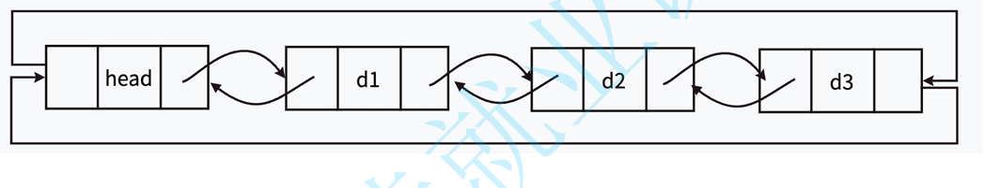

在数据结构中，顺序表和链表是两种常见的数据存储结构。它们各自有着不同的特点和适用场景。
1. 顺序表
1.1 静态顺序表
静态顺序表使用定长数组存储元素,其缺陷在于空间大小固定,可能造成空间浪费或不足。静态顺序表的优点在于操作简单,查找元素的时间复杂度为O(1)。
1.2 动态顺序表
为了解决静态顺序表的空间浪费或不足问题，引入了动态顺序表。动态顺序表可以根据需要进行增容或缩容，从而更加灵活地利用内存空间，避免空间浪费。
2. 链表
链表是一种物理存储结构上非连续、非顺序的存储结构，数据元素的逻辑顺序是通过链表中的指针链接次序实现的。
2.1 单链表
单链表中的每个节点包含一个数据域和一个指向下一个节点的指针。查找元素需要遍历链表,时间复杂度为O(n)。删除和插入元素需要调整指针,插入需要动态分配内存,时间复杂度为O(1)。
2.2 双链表
双链表在单链表的基础上每个节点还包含一个指向前一个节点的指针。双链表具有更高的灵活性，可以更高效地进行插入和删除操作，但相应地需要更多的内存空间。
结论
顺序表和链表是常见的数据存储结构，各自有着不同的特点和适用场景。在选择使用时，需要根据具体的需求和情况进行权衡。静态顺序表适用于元素数量固定且较少变动的场景，
